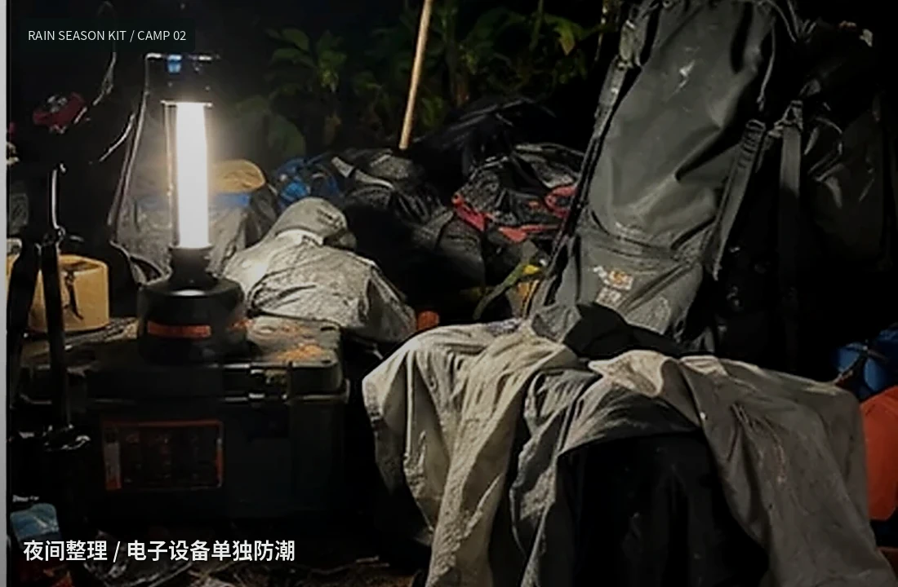
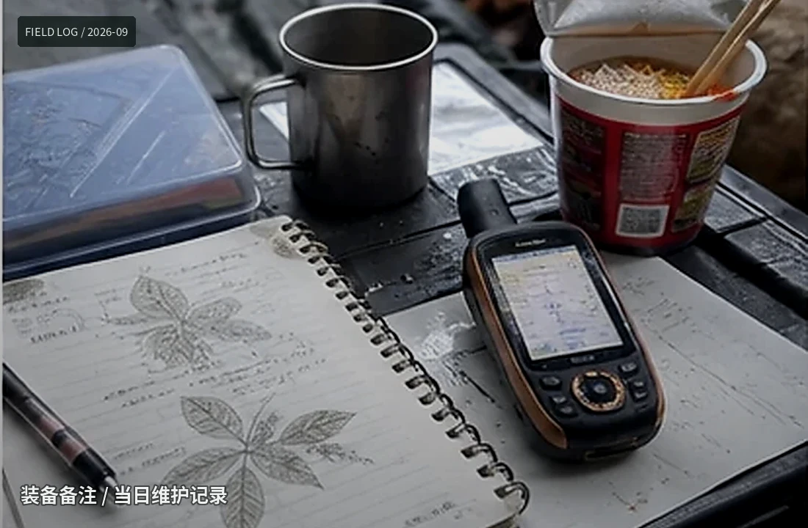
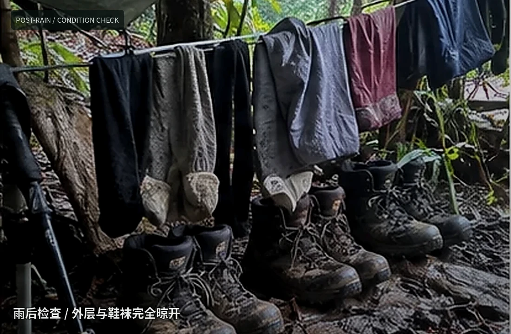

周野的装备记录
这是个人使用记录，不是评测榜单。周野习惯在维修、借出和退役时留一句短备注，所以这里既有认真参数，也有一些朋友之间的旧账。



| 装备 | 开始使用 | 状态 | 累计 | 最近备注 |
|---|---|---|---|---|
| Garmin GPSMAP 67i | 2023-03 | 在用 | 1,842 km | 备用电池在陈栩手里待过418天，最终归还时多了一道划痕。 |
| 35L 雨季背包 | 2024-05 | 在用 | 73天 | 2025更换肩带；侧袋排水孔加大。 |
| 轻量双人帐 | 2021-09 | 退役 | 112夜 | 帽山暴雨后确认底布渗水，结束服役。 |
| 挤压式滤水器 | 2025-02 | 在用 | 9个滤芯 | 高浑浊水源时明显缩短寿命。 |
| 头灯 450lm | 2022-11 | 备用 | 4次换带 | 保留在营地箱，不再做主灯。 |